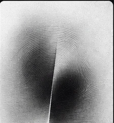
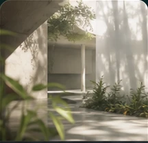
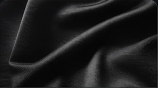
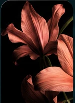
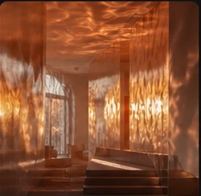
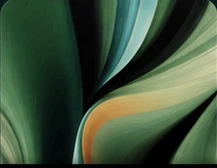
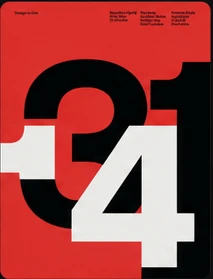
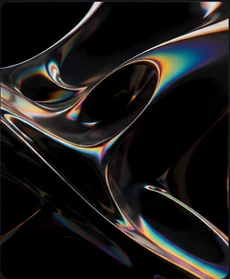
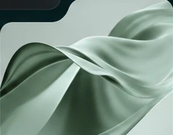
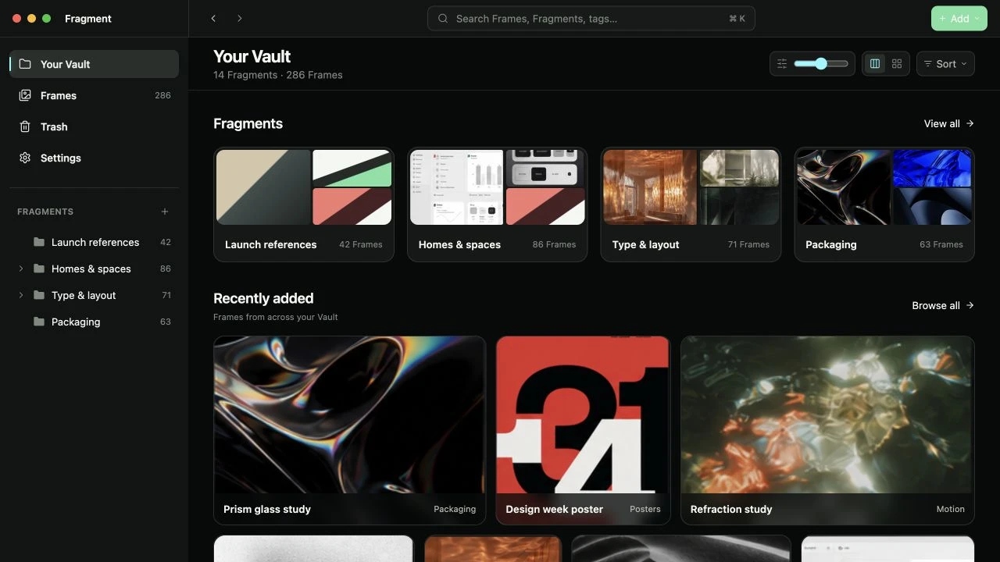

See something. Save it.
Turn on Capture Mode in Chrome. Choose an image, click Save Fragment, and pick its Frame. Stay right where you are.
A home for your visual mind
Save visual references from the web. Organize them into Frames. Make your next idea easier to find.









Big ideas start with
little things you save.
That perfect texture. That clever layout. That thing you knew you’d need later. Give them a home you can come back to.

A place for every project, mood, and passing obsession.
Screens from Fragment, shown with a sample library.
A simpler way to collect
Less saving to the desktop.
More getting back to the good
part.
Turn on Capture Mode in Chrome. Choose an image, click Save Fragment, and pick its Frame. Stay right where you are.
Collect references by project, style, or whatever makes sense to you. Bring in local images with a simple drag and drop.
Browse visually, search your library, or narrow it down with tags and colors. Your next project starts with something you already love.
A material for a future project. A room you can’t forget. Collect the connections only you see.
6 sample references
Collected by you. Kept with you.
Your saved images live on your Mac, with their original files intact. Browse your collection offline. No account to create, no cloud upload required.
A little clarity before you collect.
Fragment is a visual reference library for your Mac. Save selected images from the web or import your own, organize them into collections called Frames, and browse them in one place.
Install the Chrome extension and open Fragment once to connect it. Click the extension icon to enter Capture Mode, choose an image, then click Save Fragment. The beta extension is installed manually. See setup instructions.
Yes. Your saved images and library are stored locally, so you can browse, organize, and import files offline. Saving a new image from the web or opening its source needs an internet connection.
Import common image formats such as JPEG, PNG, and WebP, plus supported static SVG files. Web capture works with supported image URLs. Protected images, blob URLs, and inline SVGs may not be available to save.
The current beta is for Macs with Apple silicon. The browser extension is for Chrome. Windows, Intel Mac, Safari, and mobile downloads are not included in this beta.
Fragment stores your library on your Mac. It does not require an account or upload your saved images to a cloud service. Source links help you revisit the original creator; saving a reference does not change its copyright.
Start with one image you don’t want to lose.
Download the macOS betaFor Apple silicon Macs. Your library stays local.